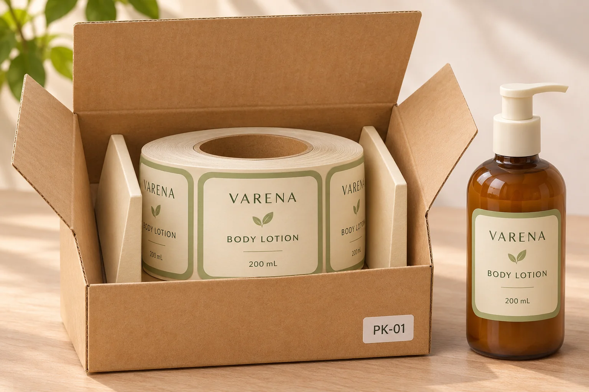
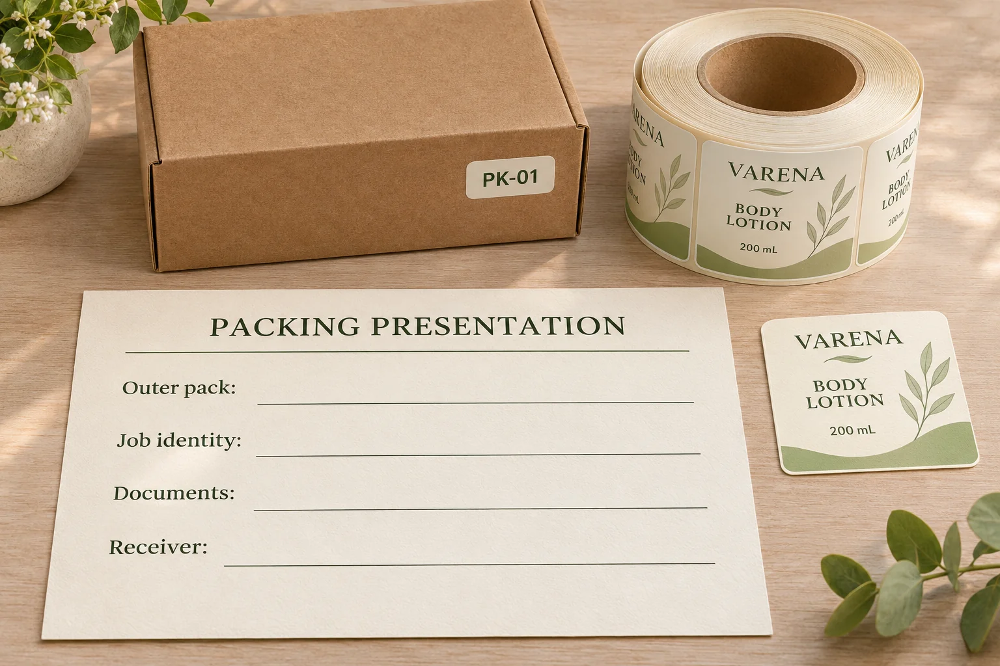

Ask for neutral packing when the receiver should not see the label printer’s promotional branding, but keep enough agreed identification to receive, select and query the correct labels. Accept ordinary supplier packing when its presentation is suitable for the job. Choose the actual carton, insert and document arrangement before dispatch; the word neutral cannot specify all of them.
This question can arise when a packaging distributor supplies a cosmetic brand or when labels go straight to a co-packer. The brand printed on the cosmetic label is one decision. The presentation of the carton carrying those labels is another. Neither should leave receiving to guess which artwork or order has arrived.

Define what neutral means for this delivery
List the surfaces and items the receiver will see: the outer carton, tape, inner enclosure, roll reference, packing list and any enclosed promotional material. State whether the request concerns the printer’s advertising, a reseller’s presentation or both. Do not assume a plain outer box also changes everything inside it.
For a provider-specific example, CSticker’s OEM/ODM page describes branded or neutral packaging for its label supply. That shows an offered presentation choice, not a universal service or a YT Labels promise. Ask which arrangement your selected printer can support and include its confirmed scope in the quotation.
Distinguish the delivery request from the cosmetic product artwork. A plain shipping carton does not authorize removing the product name, approved label copy or brand design from the labels being purchased. Keep the ordered artwork reference unchanged unless the brand separately approves a revision.
If someone asks for blind shipping, request a written description of what they expect. A phrase can conceal different expectations about branding, parcel inserts, sender information and communication with the receiver. An acknowledged packing instruction is more useful than assuming everybody uses that phrase identically.
Keep presentation separate from receiving identity
Ask the receiving team which references it needs to connect the delivery with its order. These may include the buyer’s purchase-order reference, artwork revision, component, roll or inner-pack identity and an understandable contents list. Use that site’s actual needs rather than copying a generic carton label.
Where supplier and buyer references differ, agree the cross-reference and who maintains it. The receiver may use an acknowledged buyer-facing reference, while the purchasing contact retains the connection needed to ask the supplier about the job. A new-looking code is useful only if that relationship is available to the responsible people.
Do not remove identification merely because it looks like a supplier code. Ask which replacement or mapping is supported first. The supplied-unit traceability guide covers the later connection between a roll and its use. This page decides what the delivered presentation should show while preserving that information handoff.
Review documents and physical protection separately
Changing carton printing does not tell you what the carrier’s documents or other delivery records will show. Ask the parties responsible for the shipment to confirm the actual document and sender arrangement, the information required for their process and who receives each record. Keep unresolved document expectations open instead of describing the whole shipment as anonymous.
Also distinguish a packing list from advertising. If the buyer requests its own receiver-facing list, identify the current version, contents and person approving it. Confirm whether other records travel with the parcel or through the agreed business route. This article does not change customs, carrier or contractual requirements.
Keep the accepted support, enclosure and protection arrangement with the packing instruction. Replacing a branded carton or removing an insert must not silently replace the agreed physical protection. The roll transit packing guide addresses support, moisture questions and receiving holds; a plain box photograph cannot establish those performance claims.

Use a presentation-and-identity brief
Complete the following four rows for the proposed shipment. Attach the supplier’s response and the receiver’s relevant requirements rather than treating this worksheet as an approval on its own.
| Input | Agreement to obtain | Decision or hold |
|---|---|---|
| Visible presentation | Outer and inner packing, tape, branding and any promotional inserts; marked photograph or drawing. | Does the proposed presentation match the buyer’s actual request? |
| Job identity | Receiver-facing order/artwork/component references, contents and maintained supplier cross-reference. | Can receiving identify the supply and the responsible contact trace a query? |
| Documents and contact | Actual packing-list version, shipment-document response and receiving/issue communication owner. | Have the responsible parties resolved the document and contact expectations? |
| Protection and quotation | Accepted physical packing reference, changes required, included work and confirmed charges. | Is this a supported complete arrangement rather than an assumed free logo removal? |
- Describe which visible presentation must change and which identification must remain.
- Obtain the printer’s packing proposal and the receiver’s required references.
- Reconcile contents, document handling, physical protection and quoted work.
- Release the accepted instruction by revision, then compare the delivered arrangement with it.
For a hypothetical two-design lotion order, a buyer may accept a plain outer carton and an agreed contents list that still distinguishes the two artwork revisions. If removing the existing inner references would leave similar rolls indistinguishable, keep that part pending until an accepted mapping exists. The benefit is the intended presentation with a usable delivery, not simply fewer words on the box.
A routine order whose receiver accepts the supplier’s standard presentation may need no custom packing work. A trade order with a supported neutral proposal may justify the extra coordination. Compare the actual included work and remaining responsibilities. Neither route has an assumed price advantage.
Hold the affected dispatch when the receiver cannot identify its stock, the requested document handling is unresolved or a presentation change removes accepted protection. If the first receiver itself is undecided, use the delivery routing guide to settle that separate choice.
Send the packing presentation request with the label brief
For cosmetic bottle and jar labels, provide the artwork references, quantities, supplied format and intended receiver. Mark the outer branding or inserts you want changed and the job references receiving must retain. Ask which presentation and document arrangement can be quoted.
The form prepares a message. Send the marked packing proposal and receiving requirements by email or WhatsApp.
Prepare a packing presentation inquiry